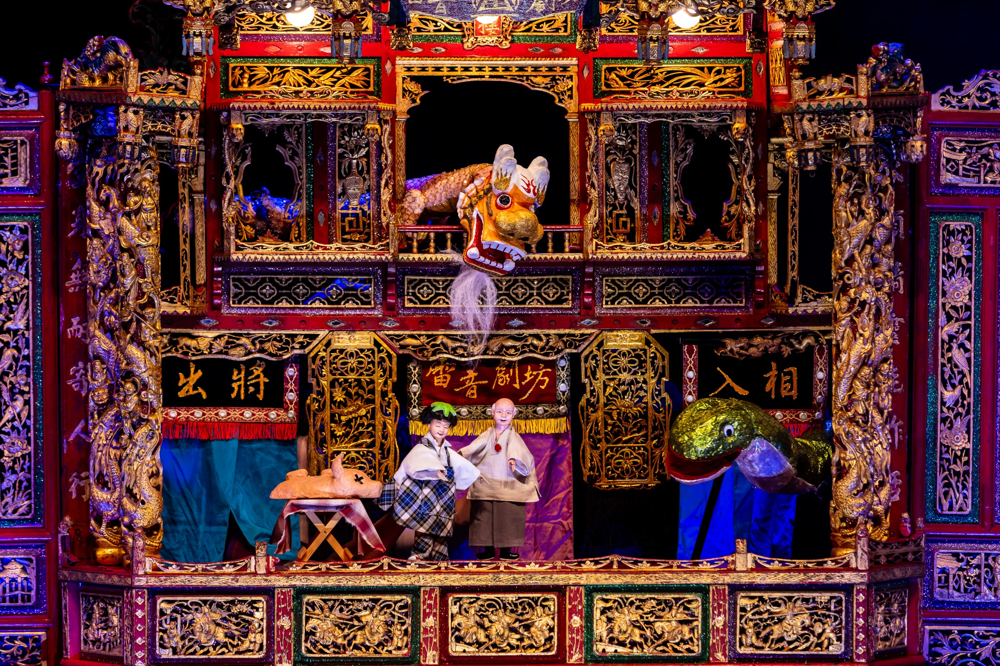
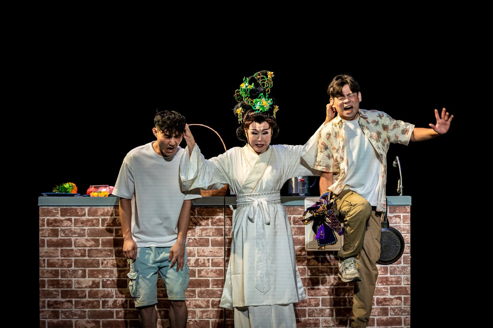
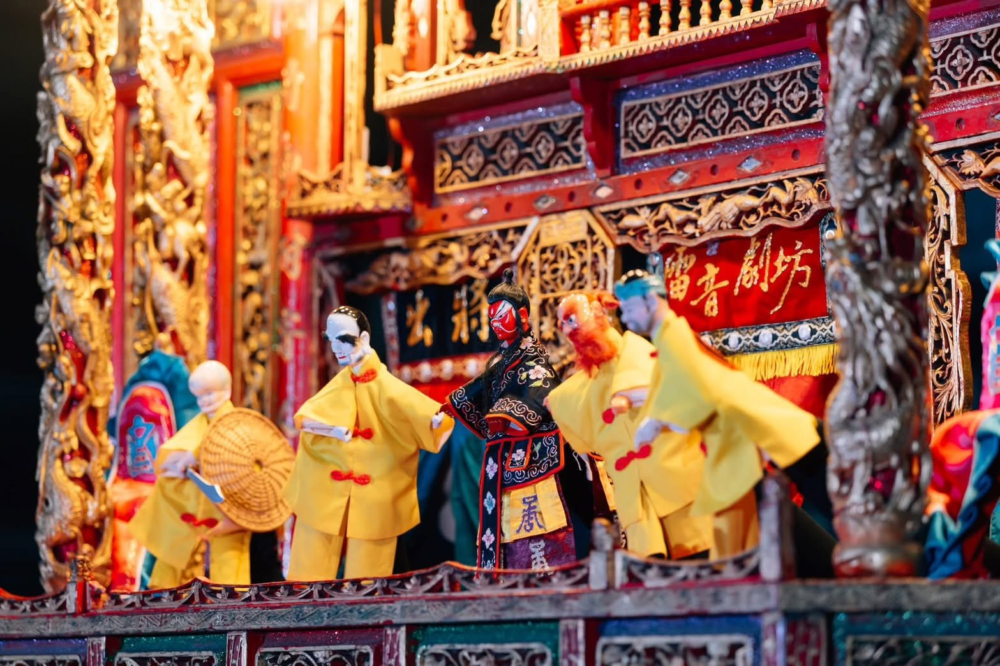
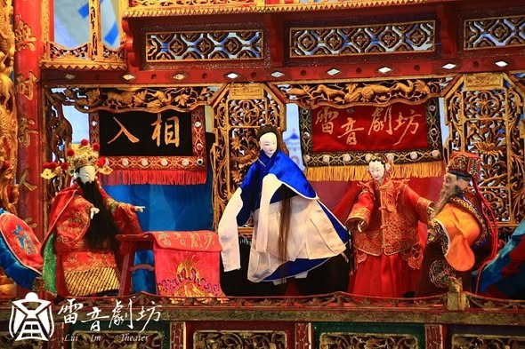
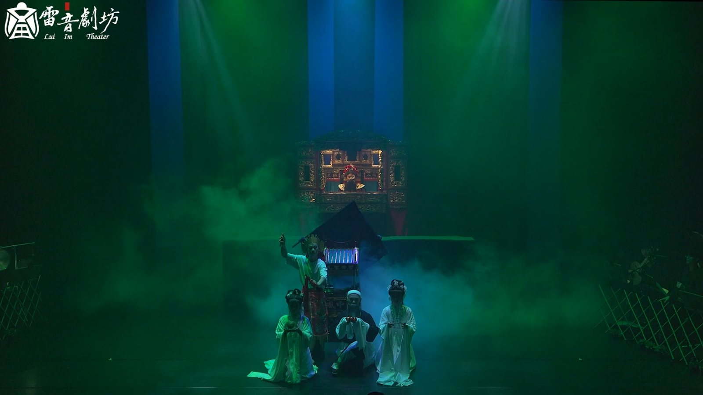
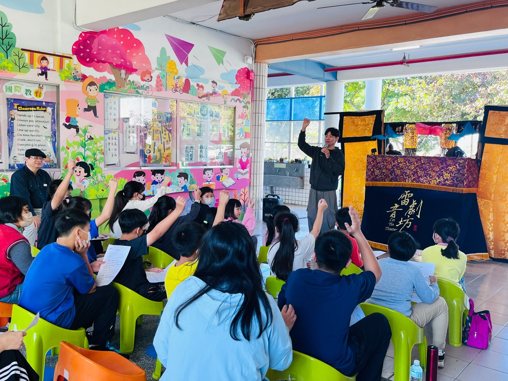
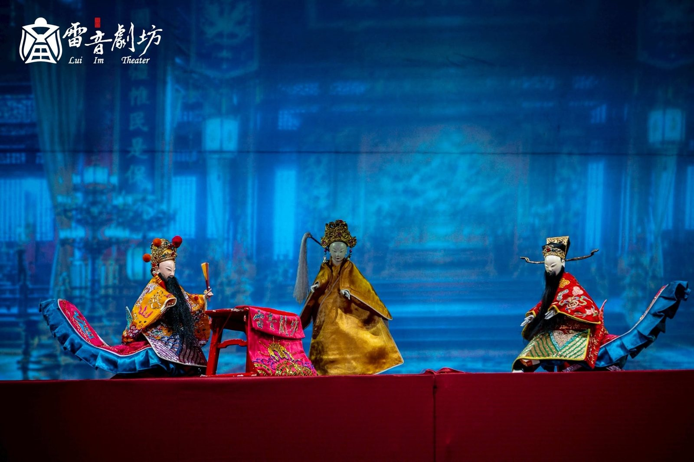
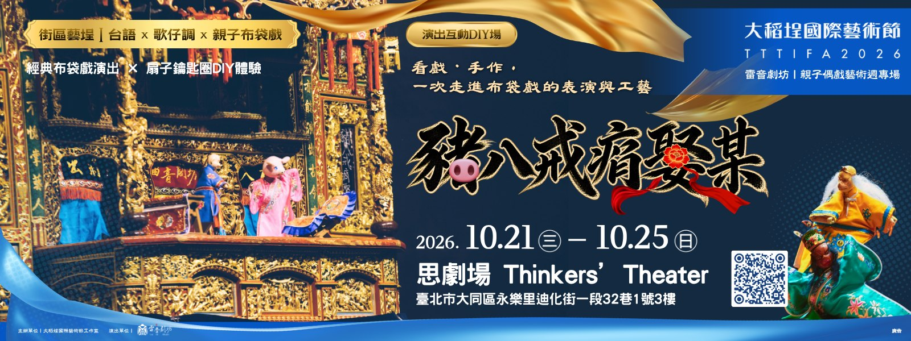
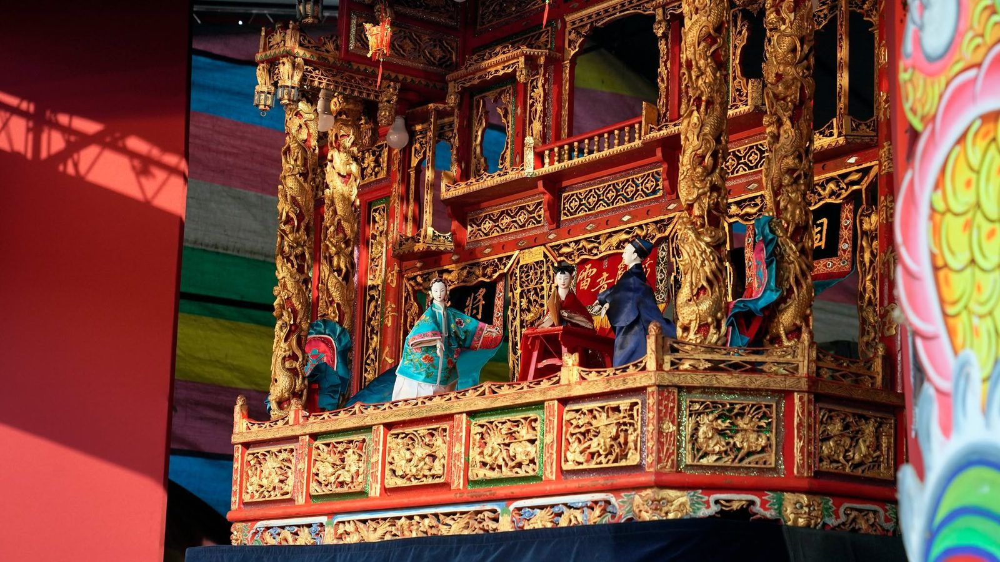

01
首屆兒童布袋戲劇本創作徵選・優選
《青瞑的龍蛇無青瞑》
以臺南青瞑龍、青瞑蛇傳說為起點，從地方水文、信仰與環境記憶重新觀看熟悉的民間故事。
每一齣戲，都有不同的故事、形式與觀看方式。從完整製作到節選演出，雷音劇坊也持續讓作品依不同場域與觀眾產生新的相遇。
實際可調整方式依劇目、演出場地、觀眾年齡與技術條件確認；歡迎提供活動時段與需求，由劇團協助建議合適版本。

以臺南青瞑龍、青瞑蛇傳說為起點，從地方水文、信仰與環境記憶重新觀看熟悉的民間故事。

從宜蘭地景與地方傳說出發，以真人、戲偶與物件共同構成親子劇場。

從《唐吉訶德》的木偶戲段落出發，以歌仔調布袋戲碰撞荒誕、想像與劇場遊戲。

以臺灣童謠《西北雨》與迎親故事為創作脈絡，在親子劇場中帶入臺語、地方俗語與互動。

從一把誤偷的傳家大刀開始，牽起鯽仔魚與蘭花的姻緣線，展開小人物的喜劇冒險。

從冤魂在地府受審展開，以人偶同台與多重敘事追問執著、是非與一桿秤的重量。

取材臺灣童謠與地方民間趣味，描寫鯽仔魚迎親途中遭遇西北雨、渡溪與阻攔的冒險。

延續傳統教孝戲精神，以青春視角與詼諧節奏重新詮釋沉香救母。

傳統布袋戲經典劇目，已於大稻埕戲苑與臺北大龍峒保安宮公開演出。

從高家莊招親展開的經典喜劇，透過豬八戒的誇張性格、操偶與口白節奏，帶出熱鬧又親近觀眾的傳統布袋戲趣味。

從蘇州秀才與相府千金的錯配姻緣展開，以鮮明小人物、臺語俚諺與機智轉折構成熱鬧的傳統喜劇。